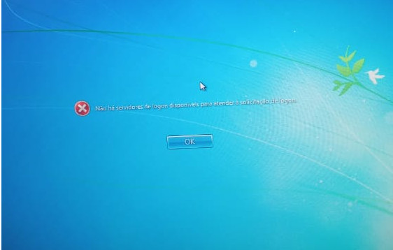
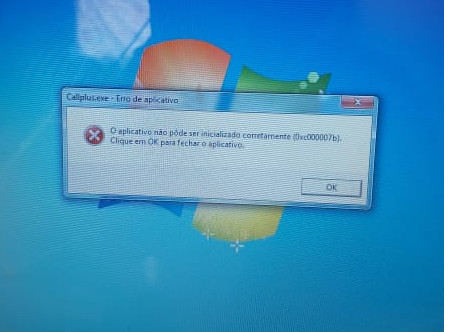

Vamos Exercitar os Conhecimentos Adquiridos?
01 - Qual setor reponsável pela resolução do erro abaixo?
02 - Qual o setor responsável pela resolução do erro abaixo?

03 - Qual o setor responsável pela resolução do erro abaixo?
04 - Qual o setor responsável pela resolução do erro abaixo?
05 - Qual o setor responsável pela resolução do erro abaixo?

06 - O que deve ser feito para resolver o erro abaixo?

07 - O que deve ser feito para resolver o erro abaixo?

08 - O que deve ser feito para resolver o erro abaixo?
09 - O que deve ser feito para resolver o erro abaixo?
10 - Qual a melhor forma dentre as abaixo para avaliar a situação e resolver o problema?